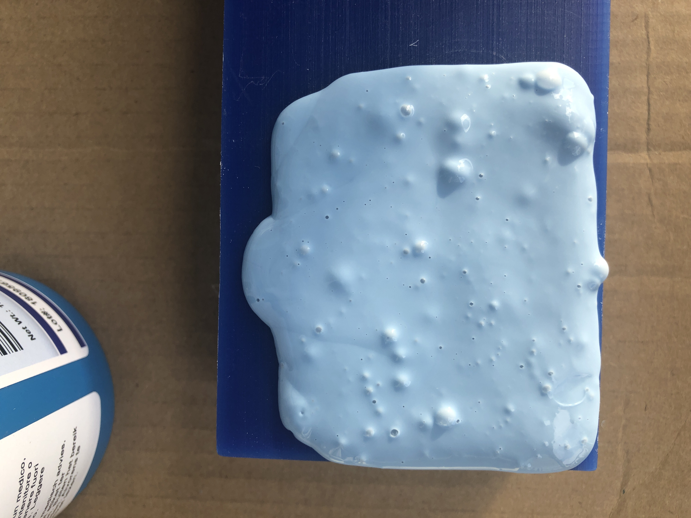
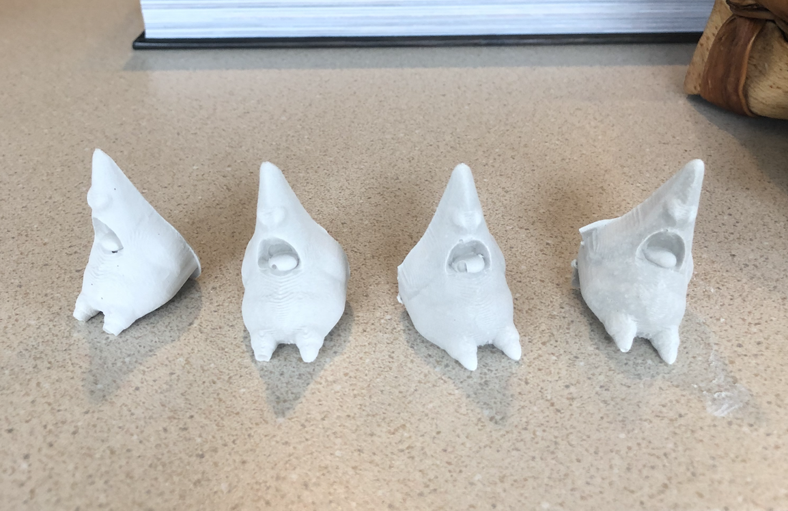

Julie's Assignment 7!
Here is all the documentation for assignment 7!
For assignment 7 - creating and casting a mold, I was inspired by my favorite childhood cartoon Spongebob Squarepants

3d Design in Rhino
I initially found a 3d STL file on Thingiverse of Spongebob and placed him in a cut out cube in Rhino. Once I attended office hours with Nadya on Sunday, she recommended that I choose a less detailed STL, so I found a Simpler one of Patrick Star.
I attended the Sunday Office Hours session with Nadya and many others, and was lucky 🍀 as I was the last person to get their machineable wax machined out. I didn't run into any issues during this process besides shifting my STL to Patrick Star, finalizing my specs with Nadya, and then patiently waiting 7 hours to get it machined.
In the end, it worked out and I left Sunday evening with a mold.
Creating the Mold with OOMOO:
The next phase was to create the mold with OOMOO, I gathered some paper cups and chopstix from the grocery store near me, along with rubber gloves.
Next I set up a station out on the porch of my apartment and used a 1:1 ratio in each cup. I then added the mixture together and mixed thoroughly. I set the OOMOO mold, and then 'forgot it' as I had to wait 6 hours for the material to dry. I woke up the next morning to a fully usable mold!!! Success!


Creating 3d Molded Plaster Parts I used the communal plaster material that Lukas provided - Thank you Lukas! and I transported some material home in two plastic bags. Once home I mixed the material together and began creating my first mold.
After creating my first Plaster Patrick, I repeated 3 more times and voiala! 4 Patrick Stars. 
See RHhino file for the design elements here
Credits: Thanks to Nadya for help with the CNC milling, Lukas for the plaster, Andrew and Nicole for the moral support on our personal slack DMs.
Reflection: Next time I would likely use a better STL file, maybe just a shape or something with cleaner lines, as some of the detail was lost from the Patrick Star STL file.